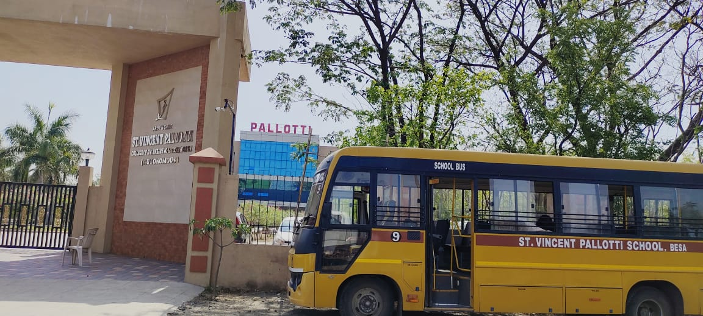

About
GPS-enabled software systems combined with hardware like a tracking device installed within buses as well as apps installed on phones of users (e.g. drivers), a “real-time” bus tracking system can monitor the movement of buses on a map. Data such as the speed of the bus, the distance covered, the remaining distance to its destination, the number of scheduled stops (etc.) is received by Fleet managers in real-time. This helps them in taking any corrective action should there be any deviation or delays. An important part of bus-tracking is the school-bus segment since it is greatly beneficial for parents and school authorities to be able to monitor the safe transit of their children.
